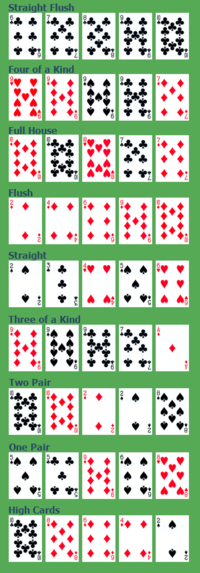

무시무시 규칙
무시무시에서 판정은 카드를 뽑아 그 카드의 가치와 난이도를 비교하여 한다. 카드의 가치는 숫자(1~10)-J-K-Q-A 순으로 좋으며 JOKER는 그 어느 카드로도 변할 수 있다. 조커와 A가 동시에 나오면 조커를 A로 변환시켜 무승부. 판정은 뽑기와 대결로 진행된다.
뽑기
뽑기는 캐릭터의 행동에 대한 성공여부를 간단히 확인해 볼 때 쓰는 방식으로 해당 판정에 알맞는 설정 숫자 만큼의 카드를 뽑아서 그 중 판정 난이도 이상의 가치를 가진 카드가 있다면 성공하고 미만이면 실패한다.
대결

무시무시에서 전투나 설전, 추격전 등 여러 캐릭터들이 서로 대결하며 끊임없이 판정을 해야하는 상황이 생길 경우 포커 놀이로 대체한다. 대결은 뽑기와는 달리 카드 여러장의 콤비네이션으로 이루어진 포커 족보를 사용해 더 높은 족보를 가진 쪽이 승리. 족보는 위 그림을 참고 바람.
- 하이카드: 순수히 카드 한장의 가치.
- 페어: 카드 2장의 숫자가 같음.
- 투페어: 페어가 2개임.
- 트리플: 카드 3장의 숫자가 같음.
- 스트레이트: 카드 5장의 숫자가 연결됨.
- 플러시: 카드 5장의 모양이 같음.
- 풀하우스: 트리플과 페어가 한 번에 있음.
- 포카드: 카드 4장의 숫자가 같음.
- 스트레이트 플러시: 스트레이트에 모양이 모두 같음.
- 로얄 스플: A-K-Q-J-10에 모양이 모두 같음.
대결은 먼저 참여자가 해당 대결과 어울리는 설정 만큼의 카드를 받는다. 그리고 가장 설정이 높은 캐릭터부터 시작해(선발주자는 무조건 칩 1개를 걸어야 하며 레이즈로 가격을 바로 올릴 수도 있음) 시계방향으로 순서대로 베팅1을 한다.
베팅은 콜/레이즈/폴드로 구성 되어 있다. 콜은 앞선 가격 만큼의 칩을 베팅하는 것이며 대결을 계속해서 진행이 가능하다. 폴드시 해당 라운드(대결이 아닌)를 포기한다. 그렇게 모두 결정을 하면 베팅1이 끝난다. 다만 여기서 누군가 레이즈(가격을 올리는 행위) 이미 베팅을 한 사람들은 올라간 가격만큼 추가로 칩을 내거나 폴드할 수 있다.
베팅1이 끝나면 모두가 공유하는 카드 3장을 테이블에 깔고 베팅2를 진행한다.
베팅2가 끝나면 공유 카드 2장을 추가로 테이블에 깔고 베팅3를 진행한다.
베팅3까지 모두 진행이 되었으면 모두 처음에 받은 자신의 패를 오픈해서 족보를 비교, 마지막으로 족보가 가장 큰 사람이 칩을 모두 가져간다.
대결은 어느 한쪽이 기권하거나 칩이 바닥날 때까지 진행한다. 한 라운드가 끝나면 다음 라운드를 똑같이 진행. 최후에 남은 승자는 대결의 결과를 정한다. 여기서 적대 세력중 호러는 완전히 제거가 불가능 할 수도 있다. 여기서 기권자보다 칩이 바닥이 나서 참패한 쪽이 더 심각한 결과를 얻게 된다. 이후 승자는 자신이 가진 칩이 원래 보유량보다 5개 초과마다 보정 1점씩을 얻는다. 또한 칩을 잃은 동료들에게 나눠줄 수도 있음. 대결에서 잃은 칩은 시간경과에 따라 회복됨.
카드 대신 주사위
만약 카드가 없고 주사위만 있다거나, 혹은 그냥 주사위가 더 좋을 경우 주사위를 써도 됩니다. 이는 뽑기와 대결에 사용되는 카드를 d6로 대체하면 그만입니다.
왜 포커인가?
본래 다른 RPG에서 흔히 있는 전투나 추격전, 설전, 추리 등은 시간이 오래 걸리 경우가 많습니다. 그것은 RPG가 보통 캐릭터 중심인 경우가 많기 때문입니다. 하지만 무시무시는 참여자들이 즐기는 것이 우선입니다. 똑같은 시간에 가볍게 플레이어와 GM이 포커를 치며 즐기다가 이후 대결의 결과만 재밌게 서술하면 그만입니다.
보정과 바보력
- 보정: 주연 캐릭터들의 행동을 더 돋보이게 해주는 장치. 각 PC는 매 게임마다 3점씩 가지고 시작하며 GM 또한 3점을 가지고 시작한다. 보정은 소모시 캐릭터의 판정에 사용되는 카드가 마음에 안들 시 다시 뽑게 해줄 수 있다. PL은 자신의 PC에게, GM은 호러나 NPC 등에 사용 가능. 보정은 대결 승리시 혹은 플래그 효과 등으로 추가로 얻을 수 있다.
- 바보력: 캐릭터가 어처구니 없는 행동으로 상대를 농락하게 도와주는 장치. 처음에 0점으로 시작하며 이후 찰진 드립이나 뽑기에서 실패했을 때 PL의 병맛 넘치는 실패 묘사, 판정에서 조커를 뽑았을 때 1점씩 받는다. 이 바보력은 대결에서만 사용할 수 있으며 바보력 적용 대상의 패 한장을 자신의 것으로 만들 수 있다. 한 라운드에서 이미 바보력에 적용 되고 있는 대상은 지정할 수 없다.